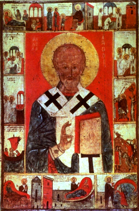

St. Nicholas – Patron Saint
Part 1
Patron Saints are chosen as special protectors or
guardians over areas of life. These areas can include occupations, illnesses,
churches, countries, craft, activity, class, causes – anything that is
important to us. The earliest records show that people and churches were named
after apostles and martyrs as early as the fourth century. Recently, popes have
named patron Saints, but patrons can be chosen by other individuals or groups
as well.
Patron Saints are often chosen today because an
interest, talent or event in their lives overlaps with a special area. For
example, Francis of Assisi loved nature and so he is patron of ecologists.
Francis de Sales was a writer and so he is patron of journalists and writers.
Clare of Assisi was named patron of television because one Christmas, when she
was too ill to leave her bed, she saw and heard Christmas Mass – even though it
was taking place miles away. Angels can also be named as patron Saints.
A patron Saint can help us when we follow the
example of that Saint’s life (a role model in our spiritual walk) and when we
ask for his or her intercessory prayers to God (a prayer warrior).
Since the ninth century in the East and the eleventh
century in the West, St. Nicholas has been one of the most popular Saints of
Christendom. St. Nicholas has been a figure in religion and folklore that
reflected the needs and hopes of millions of men, women, and children. He has
been many things to many people.
He is a patron of countries, provinces, dioceses and
cities; figurehead in innumerable churches; the Saint of sailors, children,
merchants, pawnbrokers and others; celebrated in pious custom and folklore; and
represented countless times in icons, paintings and carvings.
The universal appeal of St. Nicholas is easy to
understand. Where someone might hesitate to call upon more remote figures in
the religious hierarchy in moments of fear and stress, a more human image could
be addressed without hesitation. And St. Nicholas, by the end of the Middle
Ages, was becoming more and more human to wider and wider segments of the
European population.
The patronage of St. Nicholas can be roughly divided
into several broad categories:
The first category includes all of those qualities
and patronships referred to in connection with the family, human fertility and
parenthood.
The legend of the three children gave rise to his patronage of children and various
observances, ecclesiastical and secular, connected therewith; such were the boy
bishop and, especially in Germany, Switzerland and the Netherlands, the giving
of presents in his name at Christmas time.
The patronage of St. Nicholas over children had many
aspects, from the conception of a child and its safe birth and babyhood,
protection during student years and against all changes of fortune, including
illness, kidnapping, and early death.
According to Meisen, St. Nicholas emerged as a
patron Saint of students in response to the educational and instructional
requirements of schooling at that time. The patronage, begun in the schools at
the abbeys, spread to the cathedral schools.
When they arrived, they heard their teachers setting
up the young Nicholas as a model to them – pious, good and studious, a zealous
priest such as they hoped one day to become. St. Bernard’s secretary, Nicholas
of Clairvaux, describes the love of people of all ages and stations for St.
Nicholas, but particularly of priests and clerics, who thronged from all over
the world to celebrate his Feast Day. Students could hardly hope to find a more
suitable patron.
His patronage ranges from courtship and a desire for
marriage up to the protection of children against all dangers, including death.
He could be patron Saint of unmarried girls (looking for a suitor), brides,
grooms, newlyweds, and old maids.
The patronage of St. Nicholas over marriages
gradually widened into the idea that Nicholas tended to inspire happiness and
wealth, so that the Feast of St. Nicholas eventually became generally regarded
as lucky. As a result, December 6th was accepted as the kind of “lucky
day” on which important business transactions, purchases, and marriages took
place.
And, finally, this Saint, whose charity enabled a ruined father to marry his daughters honorably, has always been invoked by girls in search of husbands. At Provins, they rattle the bolt on the door of his chapel, saying:
“Patron des filles, saint
Nicholas
Mariez-nous, ne tardez pas.”
(Patron of maids, Saint
Nicholas
Find us husbands soon.)
St. Nicholas is now the patron Saint of scholars.
Whether the legends inspired the patronage or the
patronage the legends, is impossible to say; but by the thirteenth century St.
Nicholas was firmly established as the patron of children all over Europe.
Thought to Ponder:
Thought to Discuss around the Dinner Table:
St. Nicholas – Patron Saint
Part 1
